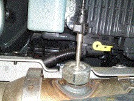

Dosing module, test
The function is used to check that the system delivers the correct amount of Adblue during a certain time.
Note:
The test is automatic and is done in 3 steps:
Step 1: Priming (approx. 30 secs).
Step 2: Dosing (approx. 360 secs).
Step 3: Off (approx. 30 secs).
Test conditions:
Engine on.
AdBlue level > 20%.
Air pressure > 7 bar.
No fault codes.
Procedure:
Remove the AdBlue injector from the exhaust system. Plug the exhaust system where the injector was mounted.
Place the injector in a container with exactly 200 ml water. The container should hold at least 400 ml.
The tip of the injector must be under the surface of the water.
After the test, the container must hold a total amount of 300 ml +- 50 ml.
The AdBlue fluid may not be reused after the test.
Check test conditions.
Start the function.
After the test is completed, stop the function and turn off the engine.
Check that the total amount in the container is 300 ml +- 50 ml.
Fit the injector in the exhaust system.
Function complete.

AdBlue injector